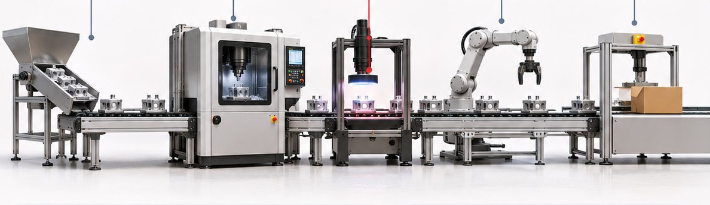

工程师的思维模型
瓶颈Bottlenecks
是什么在限制整体表现？
一个系统的总产出，取决于它最慢、最受限的那一环 。
第 1 环
上料
120 件/小时
第 2 环
加工
100 件/小时
第 3 环
检测
60 件/小时
第 4 环
装配
110 件/小时
第 5 环
包装
120 件/小时

系统产出 = 60 件/小时
总产出被最慢的一环卡住
第 1 环120
第 2 环100
第 3 环60
第 4 环110
第 5 环120
改对地方
✗ 第 1 环提速 120 → 150
产出还是 60，一点没变
✓ 第 3 环提速 60 → 110
产出升到 100
一句话记住要改的是瓶颈那一环。最忙、最显眼的那一环，改了也没用。